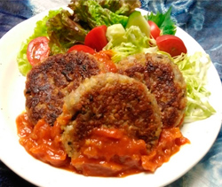

ベジミートのハンバーグ
- 調理時間：30分
- （一人当たり）
- カロリー：349kcal
- たんぱく質：26.9g
- 脂質：4.5g
- 炭水化物：50.9g
- 塩分：2.7g


＜2人分＞
- ベジミンチ
（※乾燥品の場合はもどしたもの） - 150g
- 玉ねぎ
- 1/2個
- 椎茸
- 1～2枚
- マイタケ
- 30g
- レンコン
- 100g
- 小麦粉
- 大さじ2
- 塩、コショウ
- 少々
- 醤油
- 少々
- 植物油
- 適量
- ・トマト（角切り）
- 大1個
- ・玉ねぎ（くし切り）
- 1/4個
- ・ケチャップ
- 大さじ2
- ・ソース
- 大さじ2
- ・固形コンソメ
- 1/2個
- ・植物油
- 少々
- 付け合わせの野菜
- お好みで
トマトソース


- 玉ねぎ、椎茸、マイタケをみじん切りにする。
れんこんはすりおろす。 - ベジミンチとすりおろしたレンコン、小麦粉、塩、コショウ、醤油をいれ、捏ねる。
- フライパンに油をいれて、玉ねぎと椎茸、マイタケを炒め、熱いうちに②に加えてよく捏ねる。
全体をよく捏ねたら、4等分にして成形する。 - ☆トマトソースをつくる。
１．トマトは角切り、玉ねぎはくし切りにする。
２．小鍋に油をしき、玉ねぎを炒め、しんなりしたらトマトと固形コンソメを加えて少し煮詰め、ケチャップとソースをくわえてとろみがつけば完成。 - １．フライパンに油をいれて中火にかけ、③を並べて焼き目をつける。
２．フタをして蒸し焼きにしたら裏返し、さらに蒸し焼きして、最後に表面をカリっと仕上げる。
３．④のソースをかけて出来上がり。
ベジミートのハンバーグ
大豆ミート、ソイミート、ベジミート、フェイクミートと呼ばれる植物性代替肉の需要が高まっており、注目されている背景には、環境問題や食料問題も深く関わっています。
栄養面から肉との違いは、脂質が低いことです。また、植物性代替肉は大豆由来の食物繊維が含まれます。肉類は食物繊維を含みませんので、こちらは大きく異なる点です。しかも、たんぱく質含有量は肉と遜色ないため、植物性たんぱく質を補うことができます。乾燥タイプなら保存食になりますので便利です。各メーカーによって香りや食感が異なりますので興味のある方は色々チャレンジすると楽しみも増えますね。